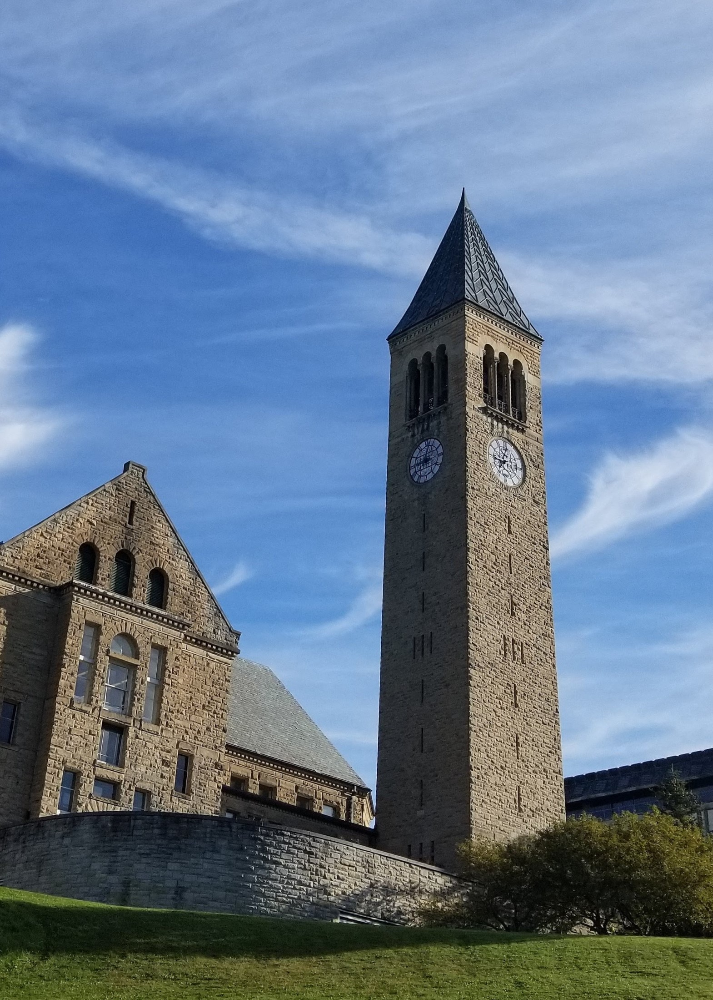

I am a senior at Cornell University in Ithaca, New York!
I am a Bachelor's degree student in Chemistry and Chemical Biology with a minor in Physics.
I am most interested in the intersection between Materials Science and Sustainability,
so I would love to work in condensed matter and materials physics, or materials synthesis.
I am also interested in lithium-ion batteries, or renewable energies fields,
especially thin-film solar cell innovation or photovoltaic materials in general.
Recently, I've also been looking to improve my programming skills and to learn more
about the different ways I can channel my creativity with coding.
As of now, I have programming experience with Python, Java, and HTML!
I have also conducted computational research using Linux!
To learn more about programming, I decided to design this website by myself with HTML!
With my Bachelor's degree in hand soon, I am looking to find a job that will be both innovative and challenging!

email: ip228@cornell.edu
LinkedIn profile: linkedin.com/in/iva-petrovic-6b20a9194